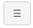
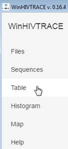
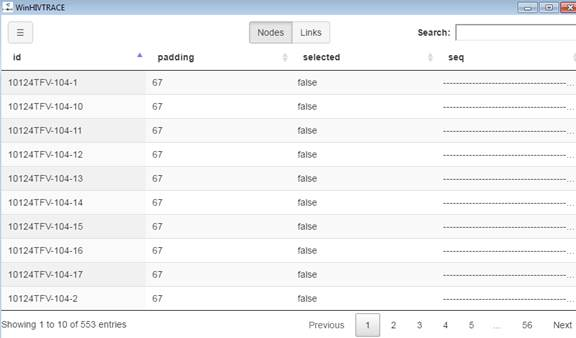
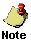
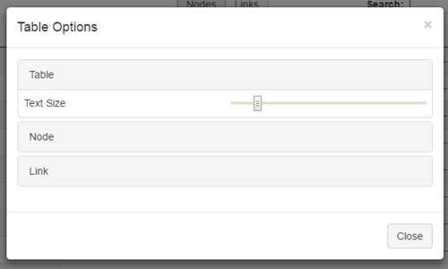
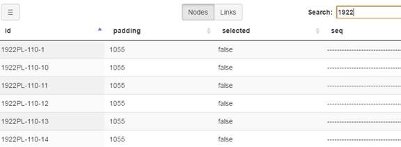
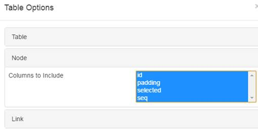
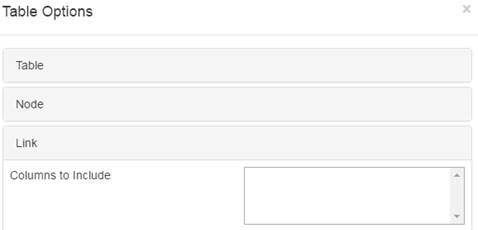

|
||||||||||
MicrobeTrace - Help |
Viewing and modifying table information
When you select options for displaying data, the system displays the data in a table.
Displaying data in table view
After uploading a file, you can view the data in table view.
- Click the  button next to the Settings button.
Result: The system displays the HIV Trace menu.
 - Click the Table option.
- Click the Table option.
Result: The system displays the table in a new window.

 |
|
Changing table display options
- You can change the way data is displayed in a table.
- Click at the top left of the table
Result: The system displays the Table Options pop up window.
 - To change the size of the text displayed in a table, slide the Text Size slider to the left to make the text size smaller or to the right to make the size larger. .
- To add or remove columns to display for nodes on the table, click the Node section.
Result: The system expands the Node section.
- To add or remove columns to display for links on the table, click the Link section.
Result: The system expands the Link section. - After selecting the desired table options, click Close or click the X at the top right corner of the window to close it.
Result: The system closes the window and displays the table according to the selected options.
- You do not have to know the entire id to search for it. You can perform a partial search by entering any string in the entry. The system displays all entries that contain the entered criteria.
- Enter search criteria in the Search box.
Result: As you type, the system displays the entries that match your search criteria.
 - To change the size of the text displayed in a table, slide the Text Size slider to the left to make the text size smaller or to the right to make the size larger. .
- To add or remove columns to display for nodes on the table, click the Node section.
Result: The system expands the Node section.
 - To add or remove columns to display for links on the table, click the Link section.
Result: The system expands the Link section.
 - After selecting the desired table options, click Close or click the X at the top right corner of the window to close.
Result: The system closes the window and displa - When viewing a map, you can use your mouse to pan or zoom in and out. You can choose to make the map larger or smaller.
- Changing column display option
- Filtering data using Display check boxes
- Managing display options
- Viewing site summary
- Select the WHO region from the WHO Region dropdown list. The system populates the Country/Survey Site dropdown list with the sites for the selected region.
- Select the country or survey site from the Country/Survey Site dropdown list.
- Select the desired year from the Year dropdown list.
- Click GO. The system displays the data for the selected year.
- Select the WHO region from the WHO Region dropdown list. The system
populates the Country/Survey Site dropdown list with the sites for the
selected region.
- Select the country or survey site from the Country/Survey Site dropdown
list.
- Select All Years from the Year dropdown list.
- Click GO. The system displays information for all years for the selected location.
- Changing column display option
- Filtering data using Display check boxes
- Managing display options
- Viewing site summary
- Select the region, survey site, column and year.
- In the Display section under the population (survey) tabs, check or
uncheck the columns to display. For example, in the screenshot displayed
above, the Boy, Girl, and Total columns are displayed because the three
check boxes are selected. To display only totals, uncheck the Boy and
Girl check boxes.
- Click GO. The system displays the data based on the
selected options.
- Click the Show Display Options link (if display options
are hidden).
- In the Display confidence Intervals field, click Yes
to display the Confidence Intervals for the data and No
to hide the Confidence Intervals.
- In the Display Sample Size field, click Yes to display
the sample size for the data and No to hide the sample
size.
- Click GO. The system displays the table according to the selected options.
- Click the View Site Summary link. The system displays
the site summary information for the country-survey site and indicator selected, and displays the Cross-Country
Comparison link which you can click to return to the original
view. The system toggles these two links.
- Click the Cross-Country Comparison link to return
to the original view.
- While viewing the table you want to print, click the Print
Table link.
- Use the standard Print dialog box to complete the printing process.
- While viewing the table, click the Export Table
link.
- Use the standard Save dialog box to complete the export process.
- While viewing the table or graph, click the
 Get
Link link. The system displays a pop-up window with the link.
Get
Link link. The system displays a pop-up window with the link.
- Copy the highlighted link and paste into the desired location.
- While viewing the graph(s) you want to print, click the Print
Graph link. The system displays a windows dialog box
for selecting printing options.
- Select the desired printing options and print the graph.
Performing a Search
When in table view, you can perform a search using data in entries as search criteria.
Selecting options for displaying data
Modifying content to display in a table
Related indicators
Viewing population (survey) resources
Footnotes
Printing a table
Exporting table information to Excel
Getting the link for a table or graph
Sorting data
When in table view, the default sort for the entries is by id. However you can change the sort by clicking on another column heading. The column used for a sort displays  when sorted in descending order. To reverse the sort, click the column heading again. The system display
when sorted in descending order. To reverse the sort, click the column heading again. The system display  when sorted in ascending order.
when sorted in ascending order.
Selecting options for displaying data
Use the Choose Survey Site section at the top of the page to select the survey, location(s), display options, or year(s) for which to display indicator.
To view table content for one year:
Modifying content to display in a table
Changing column display options
You can choose to display a table using the options displayed in the Column dropdown list. When you select an option from the dropdown list, the system displays the indicators based on the selected column. The following options available in the dropdown are determined by the selected indicator.
Filtering data using Display check boxes
You can use the Display check boxes to filter the number of columns to display on the right for an indicator.
You can choose display options using the Table Display Options located above the table. The Hide Display Options/Show Display Options link toggles between hiding and showing the options.
Selecting display options:
In the screenshot below the confidence intervals and sample size are displayed for available data (Total column).
In the screenshot below the confidence intervals and sample size are hidden for available data (Total column).
You can view summary information for the site being currently viewed. Site summary information consists of the country-survey site, indicator, topic or MPOWER objective, year, and data values.
To view site summary:
The Related Indicators section at the top right of a table displays the indicators that are related to the indicator currently being viewed. To view a related indicator, click on the link for the indicator.
Viewing population (survey) resources
The Resources section at the top right of a table displays the factsheets, country reports, datasets, and documentation that available for the selected population (survey). When you select a population (survey) using the tabs at the top of the table, the system updates the Resources section based on the selected tab. If a particular resource is not available for the selected population (survey), the system displays "Not Available" for the particular resource.
The Footnotes section at the bottom of the page provides more information for the content displayed on the page. The Footnotes section explains the symbols displayed in a table.
To print a table:
Exporting table information to Excel
To export table information:
Getting the link for a table or graph
To get the link for a table or graph:
Information presented in a table is also depicted in a graph. To view
a graph, click on the Graph icon ( )
next to the data that you want to view in a graph. The system displays
a graphical representation for the indicator. The indicator is displayed
at the top of the graph and a table showing the data in the graph is also
displayed below the graph. Just as in a table, you can use the options
available in the section above the graph to determine the data displayed
in the graph.
)
next to the data that you want to view in a graph. The system displays
a graphical representation for the indicator. The indicator is displayed
at the top of the graph and a table showing the data in the graph is also
displayed below the graph. Just as in a table, you can use the options
available in the section above the graph to determine the data displayed
in the graph.
To print a graph:
When viewing a graph, you can use the See More section to view more information for the indicator and site being viewed. Click the All sites for this indicator link to view all the sites that are available for the indicator being viewed or click the All indicators for this site link to view all the the indicators that are available for the survey site being currently viewed.